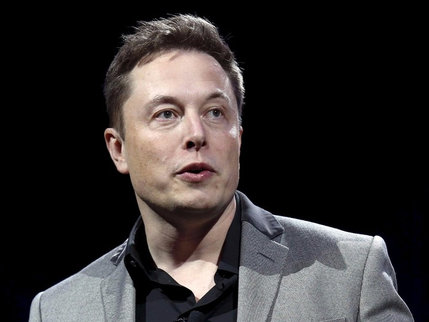

Elon Musk
Elon Reeve Musk, (born June 28, 1971) is a business magnate and investor. He is the founder, CEO and chief engineer of SpaceX; angel investor, CEO and product architect of Tesla, Inc.; owner and CEO of Twitter, Inc.; founder of The Boring Company; co-founder of Neuralink and OpenAI president of the philanthropic Musk Foundation. With an estimated net worth of around $196 billion as of February 15, 2023, primarily from his ownership stakes in Tesla and SpaceX, Musk is the second-wealthiest person in the world, according to both the Bloomberg Billionaires Index and Forbes's real-time billionaires list.With $175.8 million, Musk founded SpaceX in 2002, a spaceflight services company. In 2004, he was an early investor in the electric vehicle manufacturer Tesla Motors, Inc. (now Tesla, Inc.). He became its chairman and product architect, assuming the position of CEO in 2008. In 2006, he helped create SolarCity, a solar energy company that was later acquired by Tesla and became Tesla Energy. In 2015, he co-founded OpenAI, a nonprofit artificial intelligence research company. The following year, he co-founded Neuralink—a neurotechnology company developing brain–computer interfaces—and The Boring Company, a tunnel construction company. Musk has also proposed a hyperloop high-speed vactrain transportation system. In 2022, his acquisition of Twitter for $44 billion was completed.Twitter's board agreed to sell the company to Musk for $44 billion in April 2022, after he disclosed a 9.1% stake and threatened a hostile takeover. The deal closed in October 2022 after Musk tried to back out and Twitter sued. Musk now owns an estimated 74% of the company.

Mark Zuckerberg
Mark Elliot Zuckerberg (born May 14, 1984) is an American business magnate, internet entrepreneur, and philanthropist. He is known for co-founding the social media website Facebook and its parent company Meta Platforms (formerly Facebook, Inc) Zuckerberg attended Harvard University, where he launched Facebook in February 2004 with his roommates Eduardo Saverin, Andrew McCollum, Dustin Moskovitz, and Chris Hughes. Originally launched to select college campuses, the site expanded rapidly and eventually beyond colleges, reaching one billion users by 2012. Zuckerberg took the company public in May 2012 with majority shares. In 2007, at age 23, he became the world's youngest self-made billionaire. He has used his funds to organize multiple philanthropic endeavors, including the Chan Zuckerberg Initiative. Since 2008, Time magazine has named Zuckerberg among the 100 most influential people in the world as a part of its Person of the Year award, which he was recognized with in 2010.[3][4][5] In December 2016, Zuckerberg was ranked tenth on Forbes list of The World's Most Powerful People.[6] In the Forbes 400 list of wealthiest Americans in 2022 he was ranked 11th with a wealth of $57.7 billion, down from his status as the third richest American in 2021 with a net worth of $134.5 billion. As of February 2023, Zuckerberg's net worth was $68.6 billion according to the Forbes Real Time Billionaires making him the 16th richest person in the world.[7] A film about Zuckerberg's career, The Social Network, was released in 2010.

Ratan TATA
Ratan Naval Tata (born 28 December 1937) is an Indian businessman and former chairman of Tata Sons. He was also the chairman of the Tata Group from 1990 to 2012, serving also as interim chairman from October 2016 through February 2017. He continues to head its charitable trusts.[2][3] In 2008, he received the Padma Vibhushan, the second highest civilian honour in India, after receiving the Padma Bhushan, the third highest civilian honour in 2000.[4] He is the son of Naval Tata, who was adopted by Ratanji Tata, son of Jamsetji Tata, the founder of the Tata Group. He graduated from the Cornell University College of Architecture with a bachelor's degree in architecture.[5] He joined Tata in 1961, where he worked on the shop floor of Tata Steel. He later succeeded J. R. D. Tata's as chairman of Tata Sons upon the latter's retirement in 1991. Under his tenure the Tata Group acquired Tetley, Jaguar Land Rover, and Corus, in an attempt to turn Tata from a largely India-centric group into a global business. Tata is also one of the largest philanthropists in the world, having donated around 60–65% of his income to charity.

Sundar Pitchai
Pichai Sundararajan (born June 10, 1972), better known as Sundar Pichai is an Indian-American business executive.He is the chief executive officer (CEO) of Alphabet Inc. and its subsidiary Google.Born in Madurai, India, Pichai earned his degree from IIT Kharagpur in metallurgical engineering. Moving to the United States, he attained an M.S. from Stanford University in materials science and engineering and further attained an MBA from the Wharton School of the University of Pennsylvania, where he was named a Siebel Scholar and a Palmer Scholar, respectively. Pichai began his career as a materials engineer. Following a short stint at the management consulting firm McKinsey & Co., Pichai joined Google in 2004, where he led the product management and innovation efforts for a suite of Google's client software products, including Google Chrome and ChromeOS, as well as being largely responsible for Google Drive. In addition, he went on to oversee the development of other applications such as Gmail and Google Maps. In 2010, Pichai also announced the open-sourcing of the new video codec VP8 by Google and introduced the new video format, WebM. The Chromebook was released in 2012. In 2013, Pichai added Android to the list of Google products that he oversaw. Pichai was selected to become the next CEO of Google on August 10, 2015, after previously being appointed Product Chief by CEO Larry Page. On October 24, 2015, he stepped into the new position at the completion of the formation of Alphabet Inc., the new holding company for the Google company family. He was appointed to the Alphabet Board of Directors in 2017. Pichai was included in Time's annual list of the 100 most influential people in 2016[11] and 2020.[12]